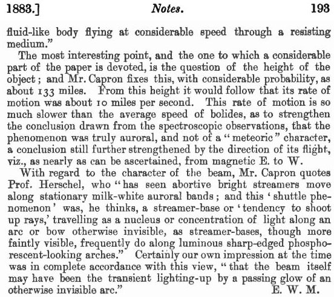
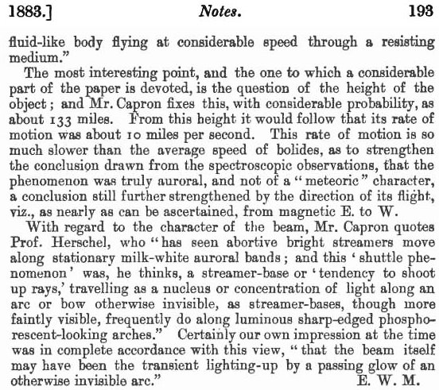
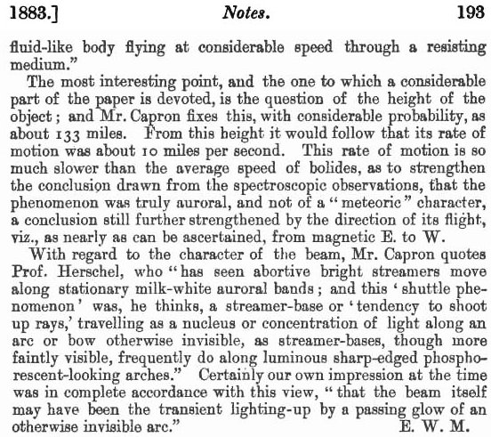
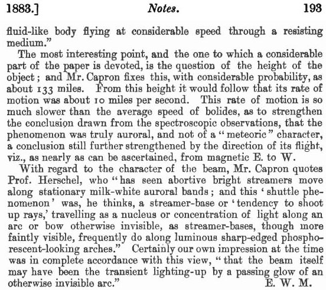

Le mois de a été rendu remarquable par l'apparition de la plus grande tache solaire vue depuis ces 11 dernières années, et par l'occurrence d'une série de tempêtes magnétiques et boréales remarquables, en coïncidence précise avec la période où la tache était visible. Mais le phénomène le plus unique et frappant de cette période eut lieu lors de la grande tempête boréale du , lorsqu'un rayon de lumière rose clair s'est élevé depuis l'horizon oriental et a majestueusement traversé le ciel in much the same manner as any ordinary celestial body might do, but with several hundred times their rapidity. So beautiful and wonderful an appearance deserved that the fullest possible attention should be paid to it ; and with this view Mr. Rand Capron has collected as many observations of it as he could procure, and has discussed them in an interesting paper appearing in the 'Philosophical Magazine' for May.
Mr. Capron has tabulated some twenty-six observations of the phenomenon, of which all but five were made in England. Most of these are incomplete in many particulars of which we could wish had been remarked ; and the exactitude of the observations actually made leaves much to be desired ; but the phenomenon appeared so suddenly, disappeared so soon, and was altogether so unusual and striking, not to say awe-inspiring, that it is rather satisfactory to find so much recorded than surprising that more information has not been secured. Mr. Capron's own spectroscopic observations, for instance, satisfactorily establish the true auroral character of the object, against the theory warmly advocated by several observers that it was a "meteor" or "meteoroid ;" and Mr. Capron sums up other principal particulars as follows :?"Time of appearance, a little after 6 P. M. Time of flight, about 75 seconds. Apparent approximate length and breadth, 27° x 3⅓. Direction of flight, magnetic E. to W."
The shape of the beam is described in very various language ; "cigar" or "spindle"-shaped represents pretty accurately the opinion of most. "Pearly white" or "greenish white" are amongst the descriptions of the colour of its light, which seems to have closely corresponded to the "citron" tint of the auroral line (W.L. 5569); and as to its quality, the comparison to an "electric glow in vacuo" gives as accurate an idea as any. To most English observers it seemed pretty well defined in outline; but some noticed a feathery or splintered appearance about its edges. Prof. Oudemans noticed a remarkable dark marking, 10° in length, down the centre (and his observation is confirmed by observers at Brussels and Chatham), as if the beam had really the shape of "a pulled-out ring," "what one might anticipate of an elastic gaseous or fluid-like body flying at considerable speed through a resisting medium."
The most interesting point, and the one to which a considerable part of the paper is devoted, is the question of the height of the object; and Mr. Capron fixes this, with considerable probability, as about 133 miles. From this height it would follow that its rate of motion was about 10 miles per second. This rate of motion is so much slower than the average speed of bolides, as to strengthen the conclusion drawn from the spectroscopic observations, that the phenomenon was truly auroral, and not of a "meteoric" character, a conclusion still further strengthened by the direction of its flight, viz., as nearly as can be ascertained, from magnetic E. to W.
With regard to the character of the beam, Mr. Capron quotes Prof. Herschel, who "has seen abortive bright streamers move along stationary milk-white auroral bands; and this 'shuttle phenomenon' was, he thinks, a streamer-base, or 'tendency to shoot up rays,' travelling as a nucleus or concentration of light along an arc or bow otherwise invisible, as steamer-bases, though more faintly visible, frequently do along luminous sharp-edged phosphorescent-looking arches." Certainly our own impression at the time was in complete accordance with this view, "that the beam itself may have been the transient lighting-up by a passing glow of an otherwise invisible arc."